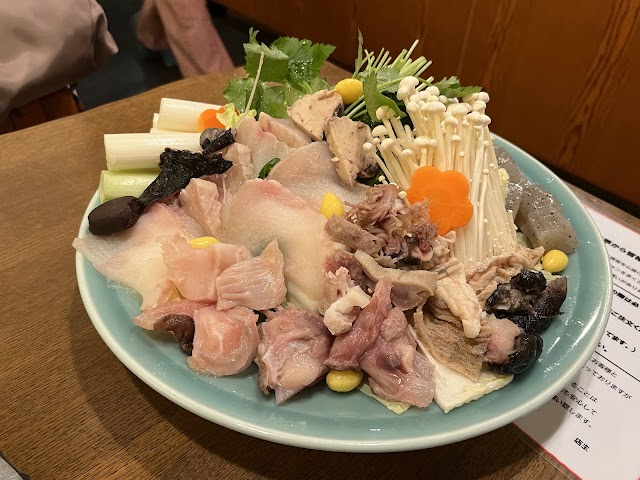
| 営業時間 | 水・木・金・土・日 11:30〜14:30, 17:00〜21:00 |
|---|---|
| 定休日 | 月・火曜 |
| 住所 | 茨城県水戸市泉町２丁目２−４０ |
| 予約 | 可 — ☎ 029-221-3617 ／ 公式サイト |
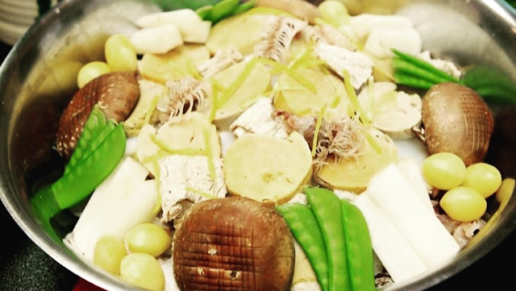
| 営業時間 | 月・火・水・木・金・土・日 11:00〜0:00 |
|---|---|
| 定休日 | なし(要最終確認) |
| 住所 | 茨城県水戸市大工町１丁目５−２０ |
| 予約 | 可 — ☎ 029-231-1231 ／ 公式サイト |
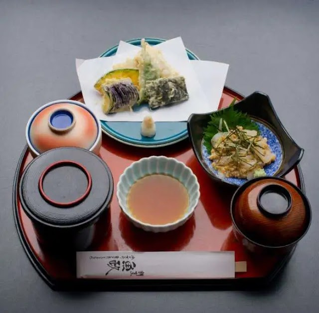
| 営業時間 | 月 17:00〜22:00 ／ 火・水・木・金 11:30〜14:00, 17:00〜22:00 ／ 土 11:30〜14:00, 17:00〜21:00 ／ 日 11:30〜14:00 |
|---|---|
| 定休日 | なし(要最終確認) |
| 住所 | 茨城県水戸市大工町２丁目１−２３ |
| 予約 | 可 — ☎ 029-221-3317 ／ 公式サイト |
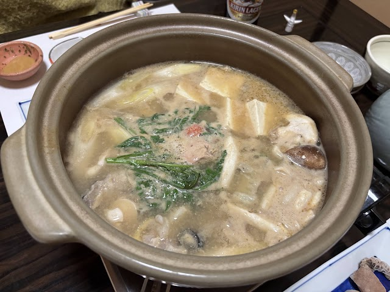
| 営業時間 | 月・火・水・木・金・土 11:00〜13:30, 15:00〜20:30 |
|---|---|
| 定休日 | 日曜 |
| 住所 | 茨城県水戸市南町１丁目３−２７ |
| 予約 | 可 — ☎ 029-225-6073 ／ 公式サイト |
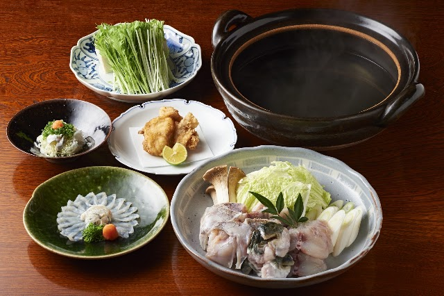
| 営業時間 | 月・火・水・木・金・土 17:30〜22:00 |
|---|---|
| 定休日 | 日曜 |
| 住所 | 茨城県水戸市南町１丁目２−４ |
| 予約 | 可 — ☎ 029-231-1735 ／ 公式サイト |
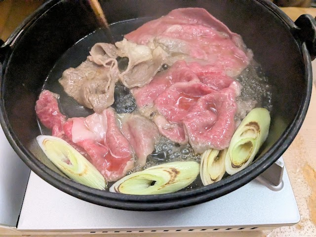
| 営業時間 | 月・火・水・木・金・土 17:00〜23:00 |
|---|---|
| 定休日 | 日曜 |
| 住所 | 茨城県水戸市栄町１丁目５−８ |
| 予約 | 可 — ☎ 029-231-4181 ／ 公式サイト |
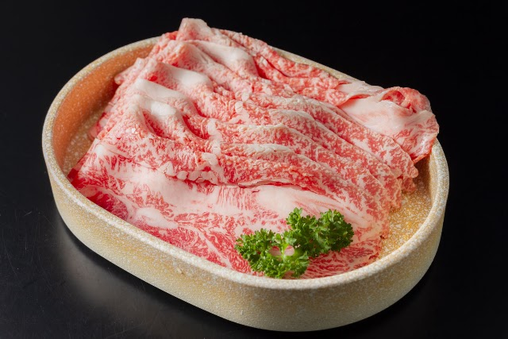
| 営業時間 | 月・火・水 18:00〜22:30 ／ 金 18:00〜23:00 ／ 土 17:30〜23:00 ／ 日 17:30〜22:30 |
|---|---|
| 定休日 | 木曜 |
| 住所 | 茨城県水戸市米沢町１６６−２ 太陽館 1階 |
| 予約 | 可 — ☎ 029-248-1041 ／ 公式サイト |
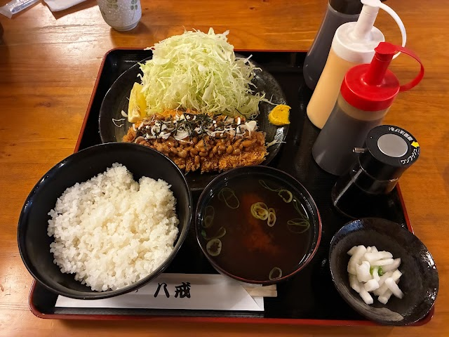
| 営業時間 | 月・火・水・木・金・土・日 11:00〜14:00, 17:30〜22:30 |
|---|---|
| 定休日 | なし(要最終確認) |
| 住所 | 茨城県水戸市笠原町６００−５４ |
| 予約 | 可 — ☎ 029-241-8029 ／ 公式サイト |
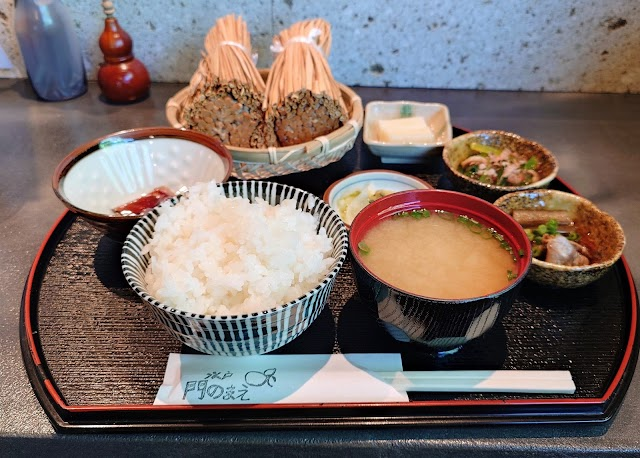
| 営業時間 | 月・水・木・金・土・日 10:00〜16:00 |
|---|---|
| 定休日 | 火曜 |
| 住所 | 茨城県水戸市常磐町１丁目３−１ 偕楽園 東門マエ |
| 予約 | 可 — ☎ 029-350-4180 |
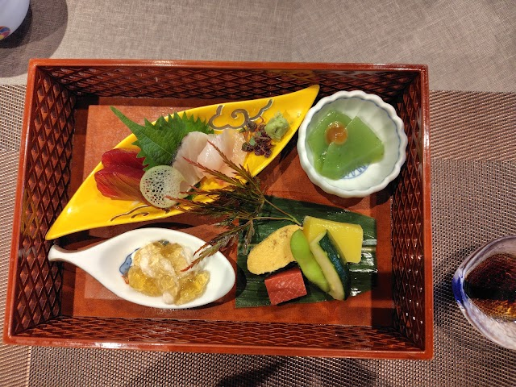
| 営業時間 | 月・水・木・金・土・日 11:30〜14:30, 17:30〜22:00 |
|---|---|
| 定休日 | 火曜 |
| 住所 | 茨城県水戸市見川３丁目１０４７−１ |
| 予約 | 可 — ☎ 029-305-7560 ／ 公式サイト |
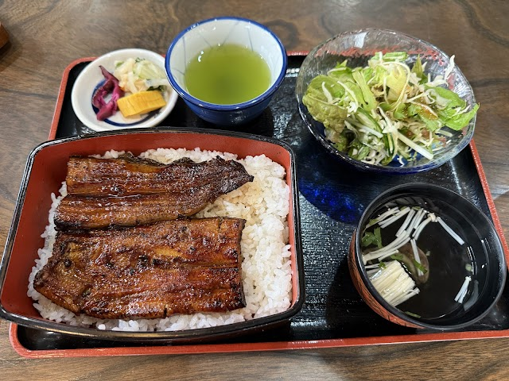
| 営業時間 | 月・水・木・金・土・日 11:00〜14:00, 17:00〜20:00 |
|---|---|
| 定休日 | 火曜 |
| 住所 | 茨城県水戸市本町３丁目１４−１０ |
| 予約 | 可 — ☎ 029-221-4296 |
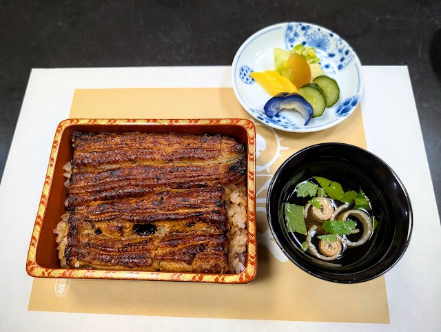
| 営業時間 | 月・火・水・木・金・土 11:00〜14:00, 17:00〜21:00 |
|---|---|
| 定休日 | 日曜 |
| 住所 | 茨城県水戸市泉町３丁目５−６ |
| 予約 | 可 — ☎ 029-231-3318 ／ 公式サイト |
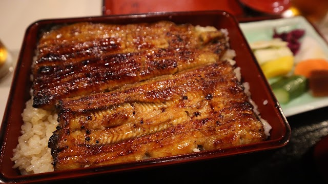
| 営業時間 | 月・火・水・木・金・土 11:00〜20:00 |
|---|---|
| 定休日 | 日曜 |
| 住所 | 茨城県水戸市宮町１丁目３−２３ |
| 予約 | 可 — ☎ 029-221-3606 ／ 公式サイト |
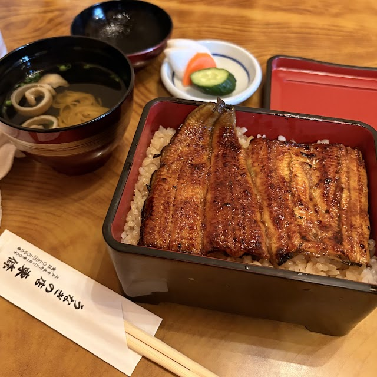
| 営業時間 | 月・火・木・金・土・日 11:00〜14:00, 16:00〜19:00 |
|---|---|
| 定休日 | 水曜 |
| 住所 | 茨城県水戸市本町３丁目１−３３ |
| 予約 | 可 — ☎ 029-227-2046 |
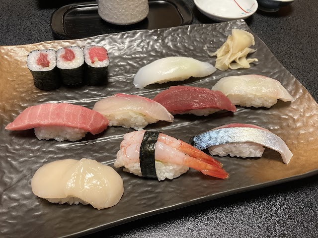
| 営業時間 | 火・水・木・金・土・日 11:30〜14:30, 17:00〜22:30 |
|---|---|
| 定休日 | 月曜 |
| 住所 | 茨城県水戸市見川２丁目３４４−８ |
| 予約 | 可 — ☎ 050-5303-6310 ／ 公式サイト |
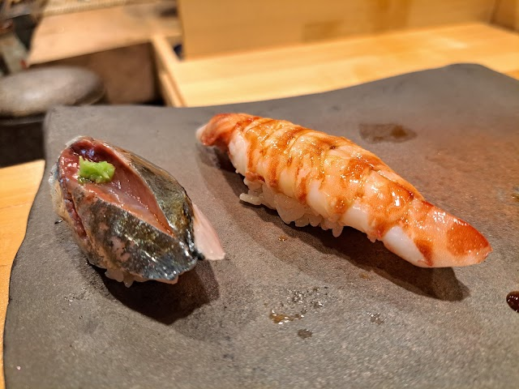
| 営業時間 | 月・火・木・金・土・日 18:00〜0:00 |
|---|---|
| 定休日 | 水曜 |
| 住所 | 茨城県水戸市平須町１５８−２９ |
| 予約 | 可 — ☎ 029-241-0253 ／ 公式サイト |
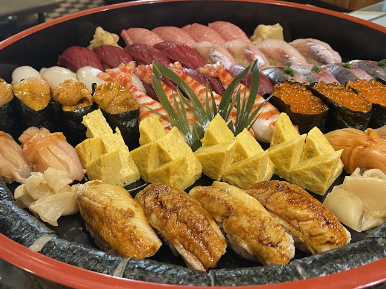
| 営業時間 | 月・火・木・金・土・日 11:30〜14:00, 18:00〜22:00 |
|---|---|
| 定休日 | 水曜 |
| 住所 | 茨城県水戸市上水戸１丁目７−２８ |
| 予約 | 可 — ☎ 029-221-3589 ／ 公式サイト |
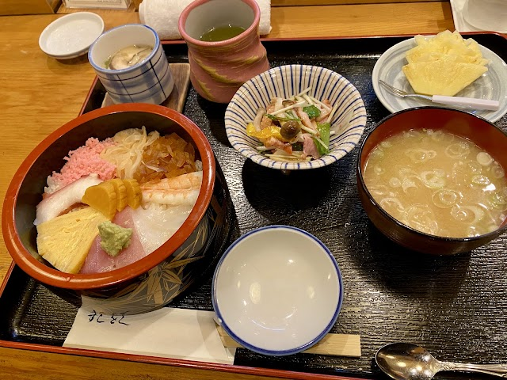
| 営業時間 | 月・水・木・金・土・日 11:00〜14:30, 17:00〜23:00 |
|---|---|
| 定休日 | 火曜 |
| 住所 | 茨城県水戸市柵町２丁目８−８ |
| 予約 | 可 — ☎ 029-221-5354 ／ 公式サイト |
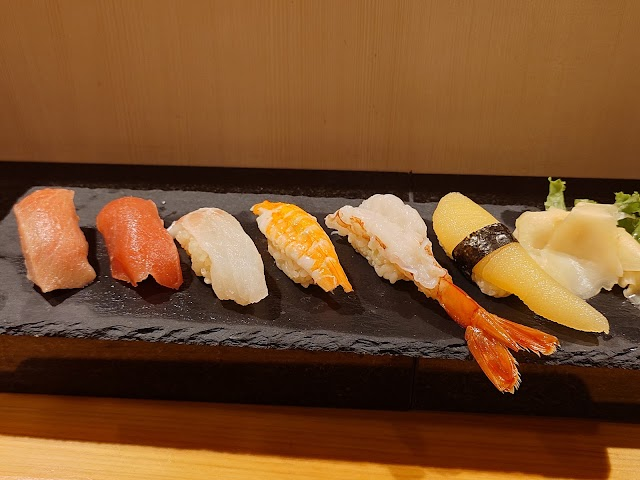
| 営業時間 | 月・火・水・木・金・土 11:30〜14:00, 17:30〜21:00 |
|---|---|
| 定休日 | 日曜 |
| 住所 | 茨城県水戸市中央１丁目５−６ |
| 予約 | 可 — ☎ 029-350-1578 ／ 公式サイト |
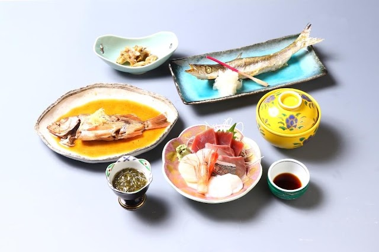
| 営業時間 | 月・火・水・木・金・土 11:00〜22:00 |
|---|---|
| 定休日 | 日曜 |
| 住所 | 茨城県水戸市南町３丁目３−３２ |
| 予約 | 可 — ☎ 029-221-5489 ／ 公式サイト |
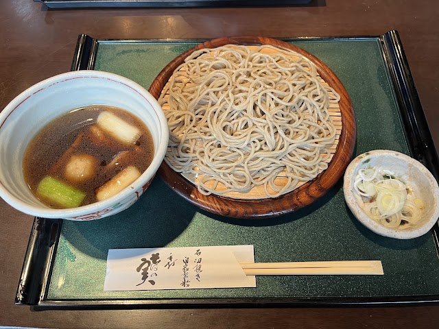
| 営業時間 | 月・火・水・金・土・日 11:00〜14:30 |
|---|---|
| 定休日 | 木曜 |
| 住所 | 茨城県水戸市松が丘２丁目１−１１ |
| 予約 | 可 — ☎ 029-231-0013 |
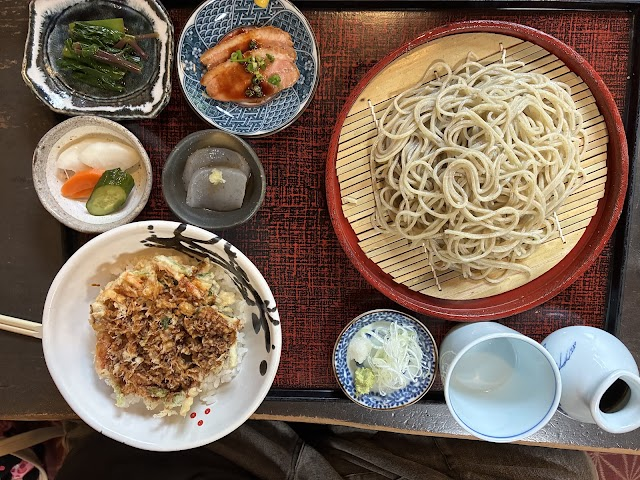
| 営業時間 | 月・火・木・金・土・日 11:00〜15:00 |
|---|---|
| 定休日 | 水曜 |
| 住所 | 茨城県水戸市松本町１７−７５ |
| 予約 | 可 — ☎ 029-233-1311 ／ 公式サイト |
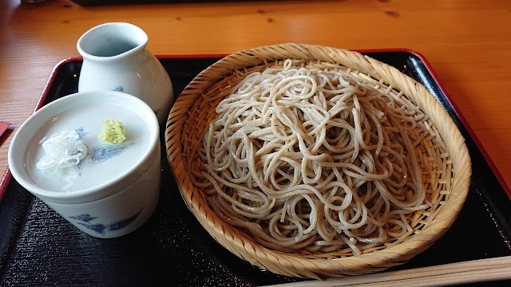
| 営業時間 | 水・木・金・土・日 11:30〜14:00, 17:00〜20:00 |
|---|---|
| 定休日 | 月・火曜 |
| 住所 | 茨城県水戸市末広町３丁目７−１５ ２Ｆ |
| 予約 | 要確認 — ☎ 029-303-6058 ／ 公式サイト |
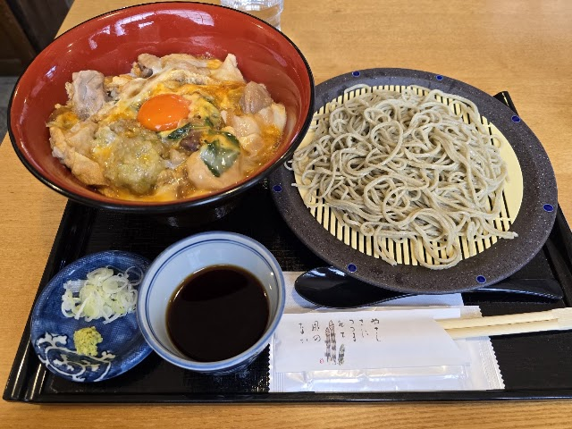
| 営業時間 | 月・火・金 11:30〜14:30 ／ 土 11:30〜15:30, 17:00〜20:00 ／ 日 11:30〜15:30 |
|---|---|
| 定休日 | 水・木曜 |
| 住所 | 茨城県水戸市若宮１丁目５−６３ |
| 予約 | 要確認 — ☎ 029-221-6329 |
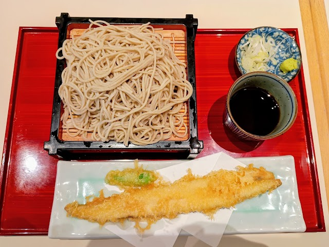
| 営業時間 | 月・火・水・木・金・土・日 11:00〜21:00 |
|---|---|
| 定休日 | なし(要最終確認) |
| 住所 | 茨城県水戸市泉町１丁目６−１ |
| 予約 | 可 — ☎ 029-297-2110 ／ 公式サイト |
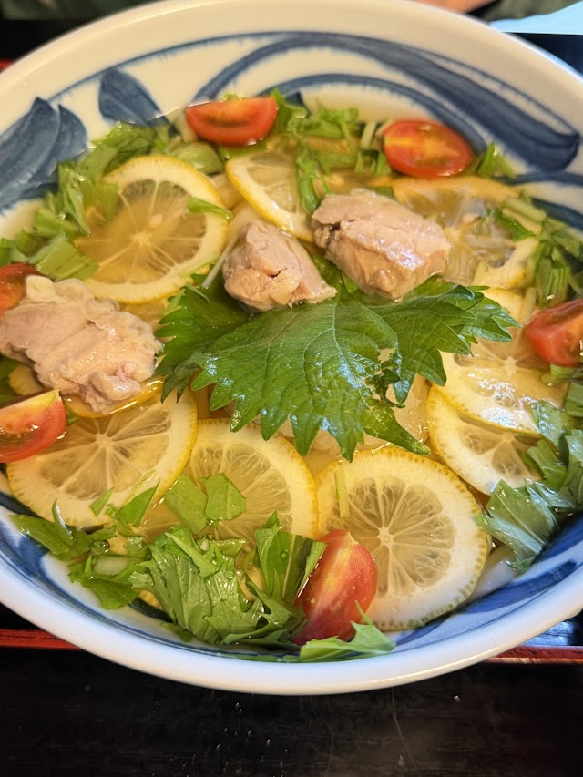
| 営業時間 | 月・火・金・土・日 11:00〜14:30, 17:00〜19:30 ／ 水 11:00〜14:30 |
|---|---|
| 定休日 | 木曜 |
| 住所 | 茨城県水戸市見川町２５５９−３ |
| 予約 | 要確認 — ☎ 029-388-0281 |
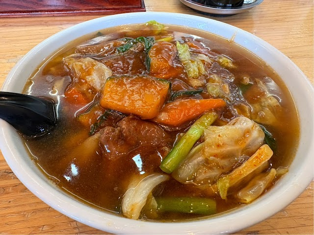
| 営業時間 | 火・水・木・金・土・日 11:00〜14:20, 17:30〜19:50 |
|---|---|
| 定休日 | 月曜 |
| 住所 | 茨城県水戸市袴塚１丁目４−１４ |
| 予約 | 要確認 — ☎ 029-221-9598 |
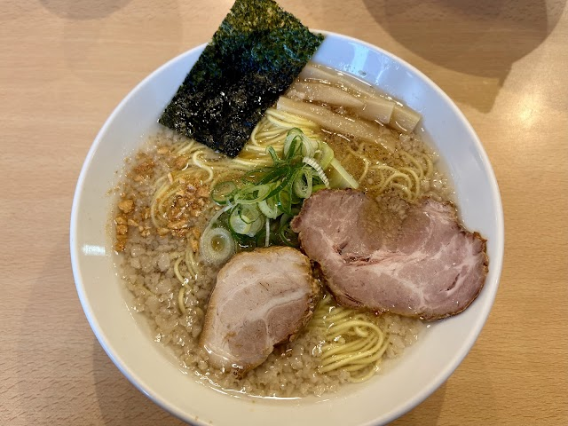
| 営業時間 | 月・火・水・木・金 8:30〜14:00 |
|---|---|
| 定休日 | 土・日曜 |
| 住所 | 茨城県水戸市米沢町６００−３ |
| 予約 | 要確認 — 公式サイト |
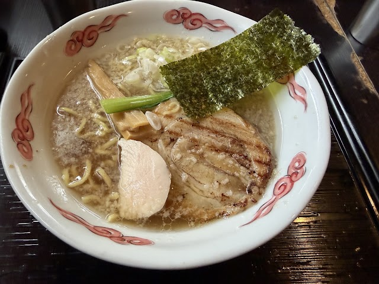
| 営業時間 | 月・火・水・木・金・土 11:00〜14:15, 18:00〜20:45 ／ 日 11:00〜14:15 |
|---|---|
| 定休日 | なし(要最終確認) |
| 住所 | 茨城県水戸市元吉田町３丁目２−３２６７−４ |
| 予約 | 要確認 — ☎ 029-231-7825 |
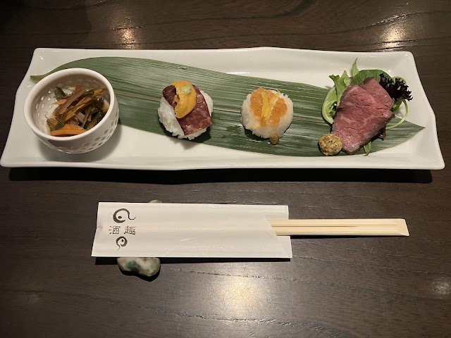
| 営業時間 | 月・火・水・木 18:00〜23:00 ／ 金・土 18:00〜0:00 |
|---|---|
| 定休日 | 日曜 |
| 住所 | 茨城県水戸市城南１丁目５−１６ |
| 予約 | 可 — ☎ 029-302-1103 ／ 公式サイト |
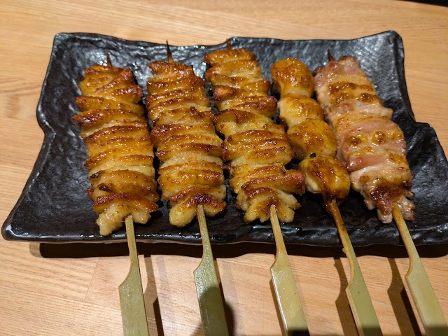
| 営業時間 | 水・木・金・土・日 18:00〜23:00 |
|---|---|
| 定休日 | 月・火曜 |
| 住所 | 茨城県水戸市中央２丁目９−２９ |
| 予約 | 可 — ☎ 080-5626-4073 ／ 公式サイト |
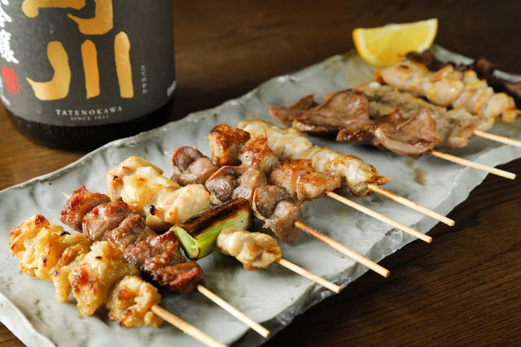
| 営業時間 | 月・水・木・金・土・日 17:00〜0:00 |
|---|---|
| 定休日 | 火曜 |
| 住所 | 茨城県水戸市大工町１丁目３−２ かわかみビル １Ｆ |
| 予約 | 可 — ☎ 080-4323-3030 ／ 公式サイト |
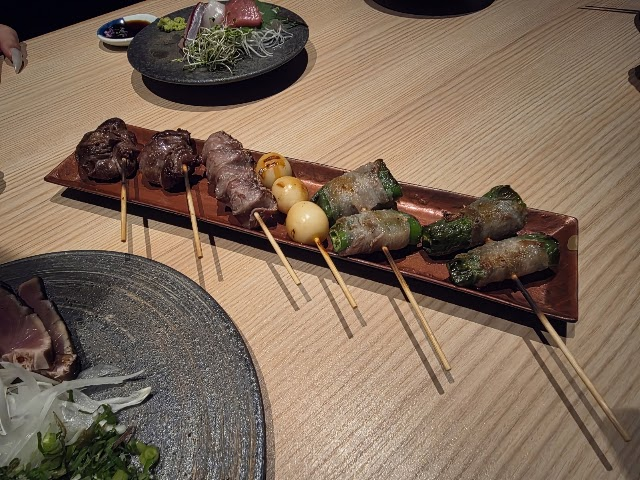
| 営業時間 | 月・火・水・木・金・土 18:00〜1:00 |
|---|---|
| 定休日 | 日曜 |
| 住所 | 茨城県水戸市大工町１丁目６−４ アーバンコート大工町 |
| 予約 | 可 — ☎ 029-303-8100 ／ 公式サイト |
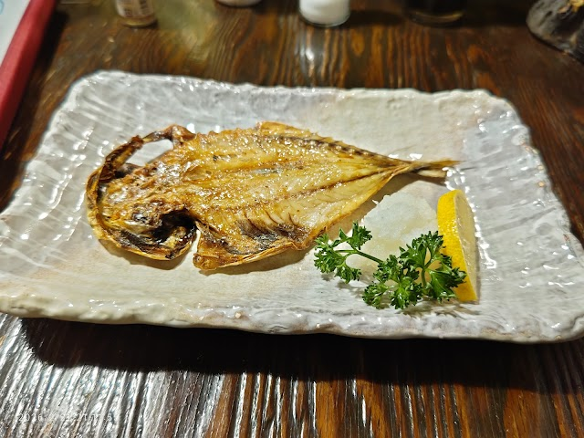
| 営業時間 | 月・火・水・木・金・土 17:00〜23:00 |
|---|---|
| 定休日 | 日曜 |
| 住所 | 茨城県水戸市宮町２丁目１−６ |
| 予約 | 可 — ☎ 029-221-2051 ／ 公式サイト |
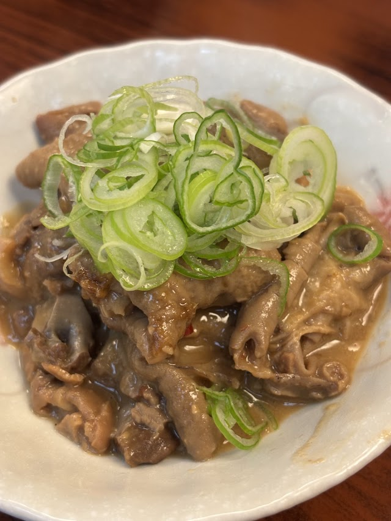
| 営業時間 | 水・木・金 17:00〜23:00 ／ 土・日 15:00〜23:00 |
|---|---|
| 定休日 | 月・火曜 |
| 住所 | 茨城県水戸市宮町２丁目１−１ 細谷ビル 1F |
| 予約 | 要確認 — ☎ 029-350-6810 |
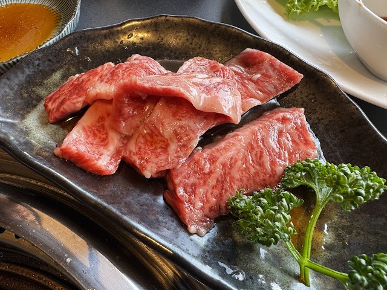
| 営業時間 | 月・火・木・土・日 11:00〜15:00, 17:00〜21:00 ／ 水 11:00〜14:00 ／ 金 11:00〜14:00, 17:00〜21:00 |
|---|---|
| 定休日 | なし(要最終確認) |
| 住所 | 茨城県水戸市西原２丁目１６−５ |
| 予約 | 可 — ☎ 029-255-1710 ／ 公式サイト |
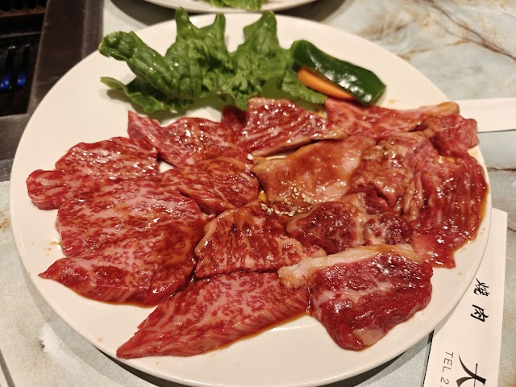
| 営業時間 | 月・火・水・金・土・日 11:00〜14:00, 17:00〜22:00 |
|---|---|
| 定休日 | 木曜 |
| 住所 | 茨城県水戸市青柳町３７２８−１ |
| 予約 | 可 — ☎ 029-231-4129 ／ 公式サイト |
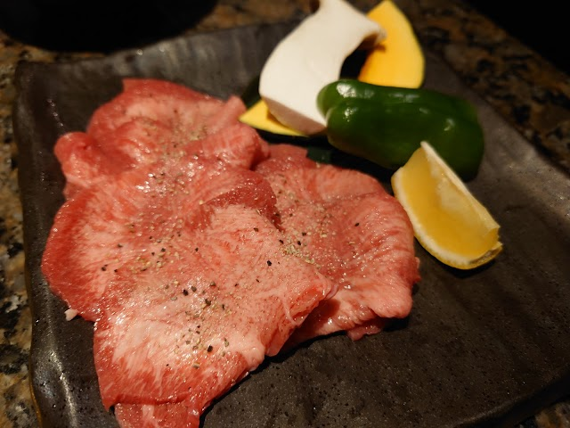
| 営業時間 | 火・水・木・金 17:00〜23:00 ／ 土・日 11:30〜15:00, 17:00〜23:00 |
|---|---|
| 定休日 | 月曜 |
| 住所 | 茨城県水戸市見和１丁目３０９−４ |
| 予約 | 可 — ☎ 029-257-2911 ／ 公式サイト |
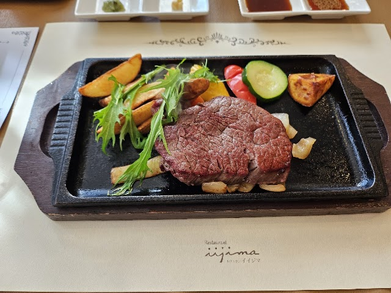
| 営業時間 | 月・火・水・木・金 11:30〜21:00 ／ 土・日 11:00〜21:00 |
|---|---|
| 定休日 | なし(要最終確認) |
| 住所 | 茨城県水戸市見和２丁目２５１−１０ |
| 予約 | 可 — ☎ 029-252-8115 ／ 公式サイト |
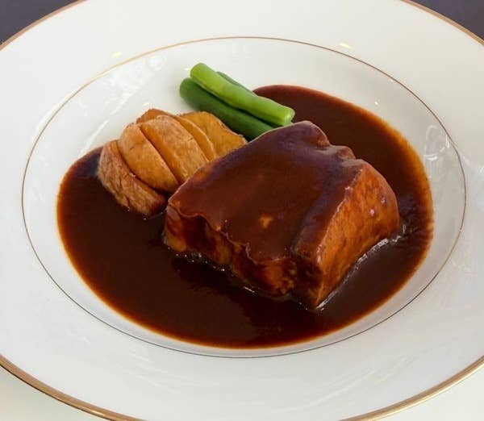
| 営業時間 | 月・火・水・木・金・土 11:30〜14:30, 17:30〜21:00 |
|---|---|
| 定休日 | 日曜 |
| 住所 | 茨城県水戸市大町２丁目３−２２ |
| 予約 | 可 — ☎ 050-5462-3219 ／ 公式サイト |
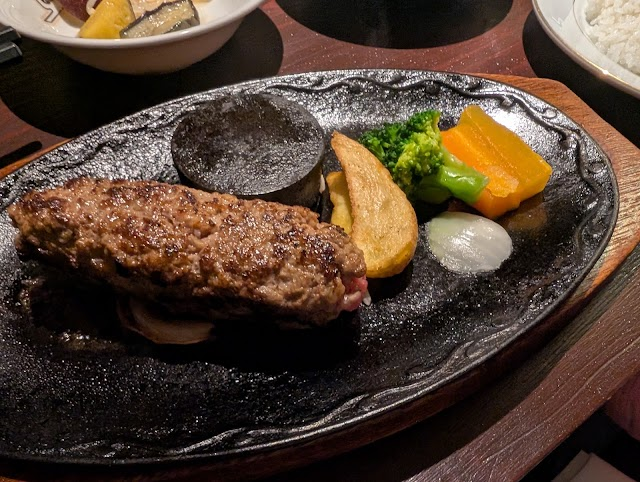
| 営業時間 | 月・火・水・木・金 11:30〜15:00, 18:00〜21:00 ／ 土・日 11:30〜15:00, 17:00〜21:00 |
|---|---|
| 定休日 | なし(要最終確認) |
| 住所 | 茨城県水戸市姫子２丁目７６７−２ |
| 予約 | 可 — ☎ 029-257-1666 ／ 公式サイト |
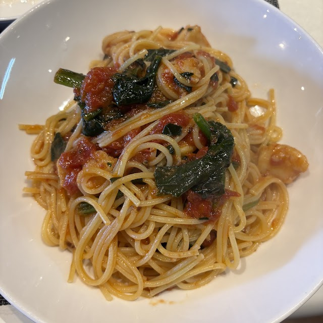
| 営業時間 | 月・火・水・木・金 11:30〜14:00, 18:30〜22:00 ／ 土 11:30〜13:30, 18:30〜22:00 |
|---|---|
| 定休日 | 日曜 |
| 住所 | 茨城県水戸市南町２丁目２−８ |
| 予約 | 可 — ☎ 029-224-7166 ／ 公式サイト |
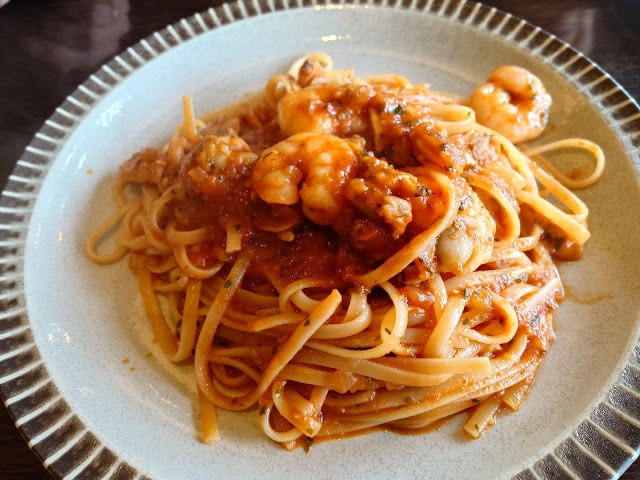
| 営業時間 | 火・水・木・金・土・日 11:30〜15:00, 18:00〜22:00 |
|---|---|
| 定休日 | 月曜 |
| 住所 | 茨城県水戸市笠原町８８７−２４ |
| 予約 | 可 — ☎ 029-277-1971 ／ 公式サイト |
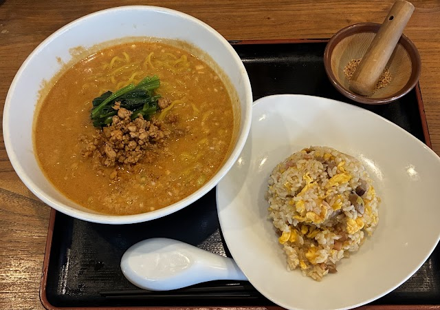
| 営業時間 | 月・火・水・金・土・日 11:30〜14:00, 17:30〜21:30 |
|---|---|
| 定休日 | 木曜 |
| 住所 | 茨城県水戸市城南２丁目１４−２２ |
| 予約 | 可 — ☎ 029-227-4335 ／ 公式サイト |
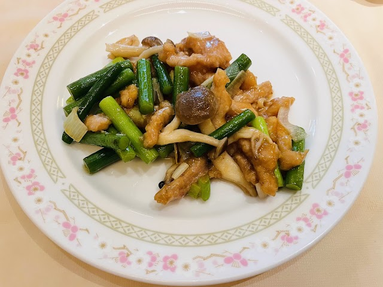
| 営業時間 | 月・火・水・木・金・土・日 11:30〜21:00 |
|---|---|
| 定休日 | なし(要最終確認) |
| 住所 | 茨城県水戸市千波町２０７８−１ 水戸プラザホテル |
| 予約 | 可 — ☎ 050-3503-1044 ／ 公式サイト |
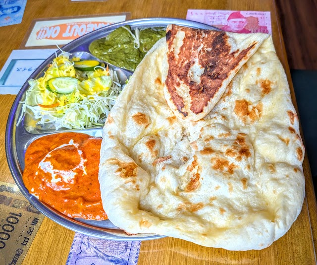
| 営業時間 | 月・火・水・木・金・土・日 11:00〜15:00, 17:00〜22:30 |
|---|---|
| 定休日 | なし(要最終確認) |
| 住所 | 茨城県水戸市中央１丁目３−３ 山口ビル 2F |
| 予約 | 可 — ☎ 029-233-1765 ／ 公式サイト |
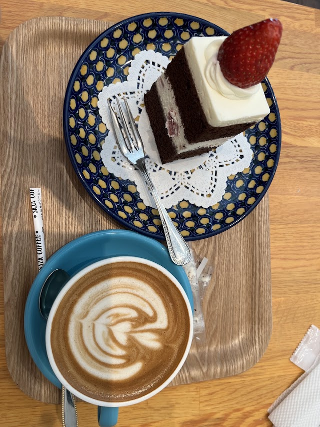
| 営業時間 | 月・火・水・木・金・土・日 10:00〜20:30 |
|---|---|
| 定休日 | なし(要最終確認) |
| 住所 | 茨城県水戸市宮町１丁目７−３１ 水戸駅ビル エクセルみなみ 3F |
| 予約 | 要確認 — ☎ 029-228-2272 ／ 公式サイト |
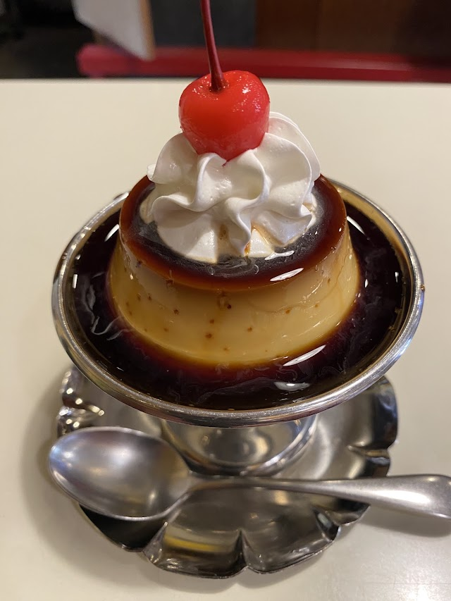
| 営業時間 | 月・火・水・金 11:30〜21:00 ／ 土・日 11:30〜19:00 |
|---|---|
| 定休日 | 木曜 |
| 住所 | 茨城県水戸市泉町３丁目２−２６ |
| 予約 | 要確認 — ☎ 050-3702-5410 ／ 公式サイト |
| 営業時間 | 月・火・水・木・金・土・日 10:00〜17:30 |
|---|---|
| 定休日 | なし(要最終確認) |
| 住所 | 茨城県水戸市千波町３０８０ |
| 予約 | 可 — ☎ 029-244-1141 ／ 公式サイト |
| 営業時間 | 月・火・水・金・土・日 10:00〜18:00 |
|---|---|
| 定休日 | 木曜 |
| 住所 | 茨城県水戸市見川町２１３９−５ |
| 予約 | 要確認 — ☎ 029-305-0310 ／ 公式サイト |
| 営業時間 | 月・火・水・金 9:30〜17:45 ／ 土 9:30〜17:30 |
|---|---|
| 定休日 | 木・日曜 |
| 住所 | 茨城県水戸市南町１丁目２−２１ |
| 予約 | 要確認 — ☎ 029-221-3418 ／ 公式サイト |
| 営業時間 | 火・水・木・金・土・日 8:00〜18:30 |
|---|---|
| 定休日 | 月曜 |
| 住所 | 茨城県水戸市堀町２１６０−５ |
| 予約 | 要確認 — ☎ 029-251-8772 ／ 公式サイト |
| 営業時間 | 火・水・木・金・土・日 10:00〜18:00 |
|---|---|
| 定休日 | 月曜 |
| 住所 | 茨城県水戸市見川２丁目１７０−１ |
| 予約 | 要確認 — ☎ 029-244-6167 ／ 公式サイト |
| 営業時間 | 月・火・水・木・金・土 8:00〜19:00 |
|---|---|
| 定休日 | 日曜 |
| 住所 | 茨城県水戸市赤塚１丁目１ |
| 予約 | 要確認 — ☎ 029-246-6355 ／ 公式サイト |
本ガイドは個人利用目的で作成。掲載情報は2026年8月時点の調査に基づく。写真出典: Google Maps投稿写真(©各投稿者/Google)。